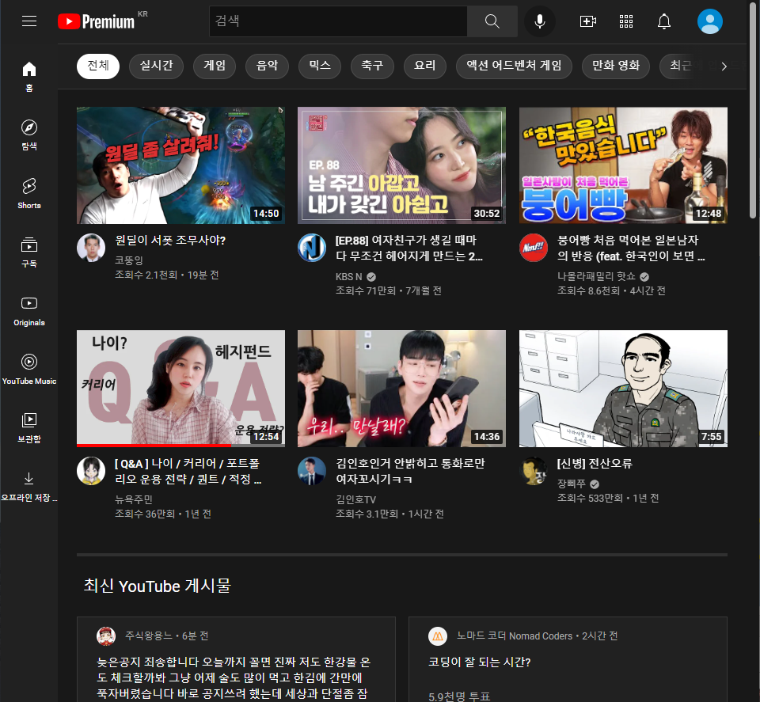

장점
ui가 굉장히 보기좋게 짜여져있다.
서버관리를 어떻게 하는지 진짜 빠르다.
최근 ui를 조금씩 바꾸며 사용자에게 보기좋은 화면으로 계속 바뀌고 있다.
단점
iframe태그를 사용했을 때 보안상으로 막아놨다.
너무 잘 만들어져 있어서 단점 찾기가 힘들다
장점
카테고리 구성이 잘 짜여져있다
색을 일정하게 맞추어서 트렌디하다.
article속성안에 header속성을 넣어서 하는 방법을 사용
단점
TRENDING VIDEOS에 움직이는 글자들이 같은 방향이 아니다.
최상단 목록이 알아보기 힘들다.
장점
ui가 굉장히 보기좋게 짜여져있다.
video태그를 사용해 효과적인 움직임이 눈에 띈다.
게임사이트답게 홈페이지도 게임 속의 모습을 홈페이지에 구성을 해놓아서 시각적으로 흥미를 돋군다.
캐릭터를 홈페이지에서 선택해보며 다양한 효과부여를 한 것을 배워보고싶다.